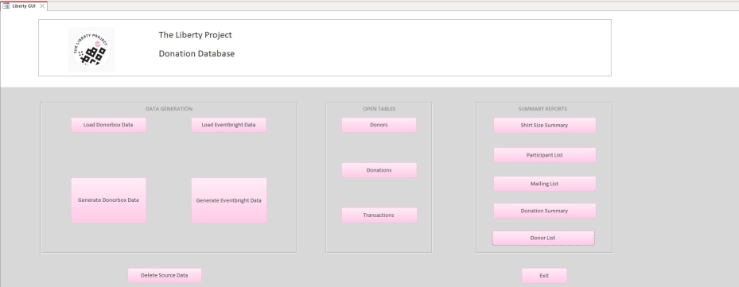

The Client’s finished database needed to be both functional and easy to use. The team built a customized User Interface inside the database driven by custom code developed with Microsoft's Visual Basic for Applications. All functions of the database work at the touch of a button. The custom User Interface the workhorse of the database.
The User Interface is divided into 3 sections based on task: importing and processing data, viewing primary tables and generating summary reports. The team also included a database backup tool and the ability to delete the source data from the database.
Data Loading is simple. Click the load button, and let the interface do all the work. Once clicked a browse window opens, and the Client can load the data from any location. The team noticed right away the Eventbrite data was missing some key information, so to make sure the data functions in the database properly, a prompt feature was included in the load, letting the Client add in the information before processing the data. Once the data loads are complete, populating the primary tables with the data can be done rapidly with the Generate Data buttons.
To maximize functionality of the database, five built-in summary reports were included. The summary reports provide the Client with quick access to key data isolated based on their business requirements. The Client will be able to easily create PDF print outs of event shirt sizes, or a donation summary, and exportable excel tables of event participants, mailing lists and a donor list, of course, at the touch of a button.